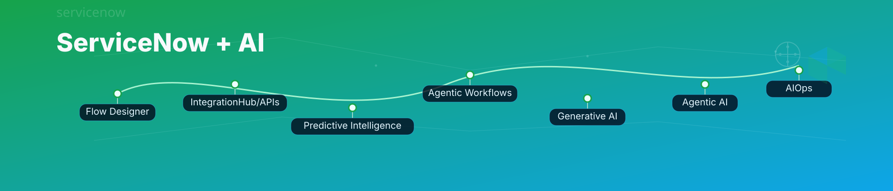
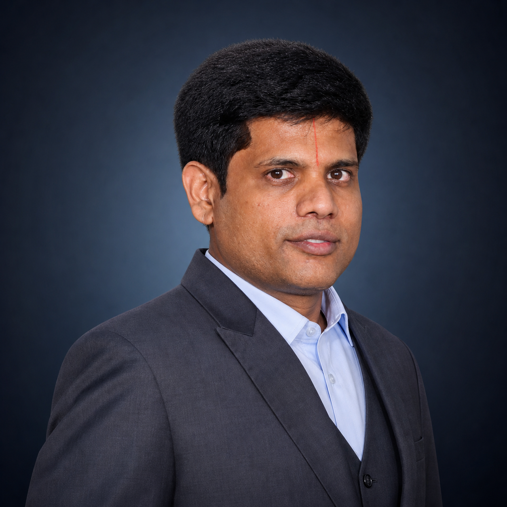

Autonomous Enterprise Brain (AEB)
Core intelligence layer enabling autonomous decisioning and self-healing workflows.


Building Autonomous Enterprise Systems using Generative AI, AIOps, and Multi-Agent Orchestration
Silicon Valley Journal • AI Journal • ENTECH Magazine
I design and build intelligent enterprise workflows that combine ServiceNow with AI-driven automation, predictive intelligence, and multi-domain orchestration.
My work focuses on transforming traditional operations into autonomous, scalable, and data-driven enterprise systems.
Core intelligence layer enabling autonomous decisioning and self-healing workflows.
Unified orchestration platform across IT, HR, Security, and Customer operations.
Real-time simulation engine for predictive operations and anomaly detection.
Specializing in Generative AI, Agentic AI systems, and enterprise automation to build the next generation of autonomous enterprise platforms.